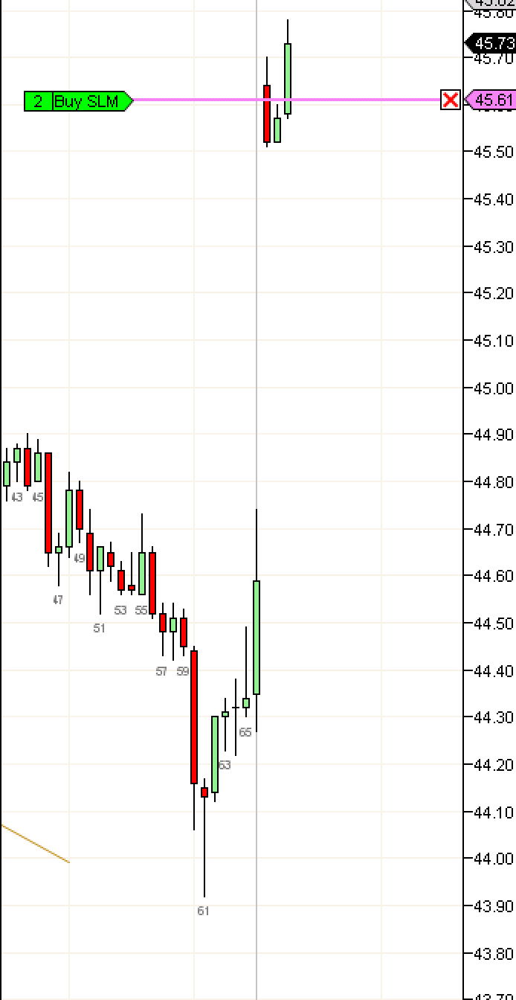

Openers: ib2
https://ninetrans.blogspot.com/2015/09/openers-ib2.html

When the market opens, either it begins to trend immediately as evidenced by very little overlap between b1 and b2 or it forms the opening range. A market that opens with a trend from b1 can simply be traded as a trend by entering with-trend close to the trendline.Usually, the first two to five bars represent the opening range and present potential setups that may lead to a trend move, i.e, a sustained move in a predictable direction that can be consistently traded for profits.
The earliest such a setup can occur is during b2, when an inside bar forms with either b1 or b2 having small tails. Today's case with both b1 and b2 being trend bars with b2 at one end of b1 represents the ideal case.
(My stop-limit-buy entry order triggered but was not filled as shown on the right because the market did not pause or return to the price)
When both b1 or b2 are not trend bars or are heavily overlapped, ib2 becomes lower probability and it may be better to pass on the trade. The chances of a large move after stopping you out increase when b2 is not a trend bar.
Note: This setup is still beta and its likely to be removed or changed in the future